Setting Up a Home Theater in a Studio Apartment for Solo Living
Why Build a Home Theater?
Have you ever heard of a home theater? It’s literally a theater in your home. Enjoying movies and games on a massive screen is simply incredible. While it might sound daunting to set up, it’s actually much easier to achieve than you might think.
There is no strict definition of a home theater. Generally, it refers to a setup with a reasonably large screen accompanied by a solid speaker system (such as surround sound). Broadly speaking, setups are divided into TV-based and Projector-based configurations, each with its own pros and cons:
- TV
- Excellent contrast
- High image quality
- Works well even in brightly lit rooms
- Projector
- Affordable (relative to screen size)
- Space-saving (relatively)
- Easy installation and mobility
- Variable screen size
- No annoying reflections of yourself on the screen
These advantages are essentially the flip side of each other’s disadvantages. In terms of raw performance, using a large TV in a dark room is supreme. So if you have ample space and budget (especially the former), buy a giant TV. Conversely, if you feel hesitant about placing a massive TV in your room, a projector is highly recommended.
In this article, I will explain specifically how to build a projector-based home theater—capable of achieving much larger screens—inside a compact studio apartment typical of solo living in Japan.
Home Theater Setup Components
Here is the essential equipment needed to properly enjoy a home theater:
- Essential:
- Projector
- Screen
- Black Mask (border)
- 2ch Speaker (system)
- Recommended (Optional):
- Stray Light Countermeasures
- 5.1ch or higher Speaker System
Let’s look into each of these based on my own setup as an example.
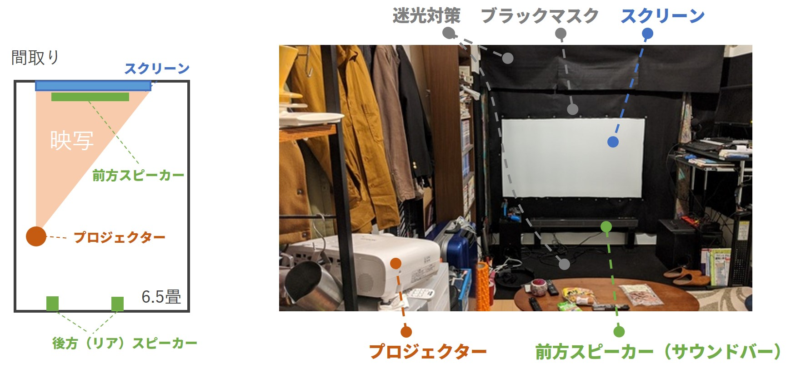
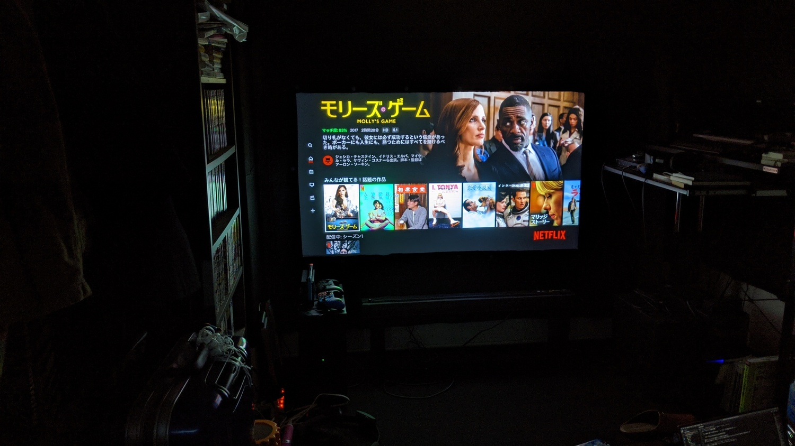
Viewing experience with the lights off.
Here is my home theater environment. It is installed in a rectangular room of about 6.5 tatami mats (~10.5 m² / 115 sq ft). While it pushes the boundaries of space efficiency, it is an optimal setup for enjoying movies and games every single day.
Projector
First, choosing the projector. There are infinite options, but to easily enjoy games and movies with high immersion, focusing on Brightness, Contrast Ratio, and Installability is the key. (Image quality on most reputable models is already great.)
Brightness
This indicates how luminous the projection is. Assuming you watch in a dark room, 1,000 lm (lumens) or higher delivers a cinema-like experience. With 2,000–3,000 lm, you can comfortably watch bright movies or games even with the room lights on. Generally, better projectors are brighter, so choose according to your budget.
Contrast Ratio
Contrast ratio is the ratio between maximum brightness and darkness; simply put, it determines how crisp the image appears. It crucially affects the expression of black levels in projectors. When weak, the image looks washed out.
Contrast ratio concept: Lower contrast degrades immersion and depth.
In a dark room, aim for at least 10,000 : 1. (In a bright room, contrast washes out anyway, so high contrast ratio won’t help.)
Installability
When setting up in a compact room, installability is vital. Projectors grow drastically in physical size as performance increases—much like being surprised by the size of a cow when visiting a farm. Furthermore, projectors require a certain throw distance from the screen. Check your room dimensions and throw ratios carefully before purchasing.
Most projectors have keystone correction for angled projection, but what I personally consider critical is the Lens Shift feature. This allows you to move the projected image vertically and horizontally without physically moving the unit. Having lens shift makes installation dramatically easier.
My Projector
I currently use an EPSON EH-TW5650 (dreamio). It delivers 2,500 lm brightness and a 60,000 : 1 dynamic contrast ratio. It supports vertical lens shift and can project large images even with short throw distances. (The dreamio series truly reigns supreme for home cinema projectors.)
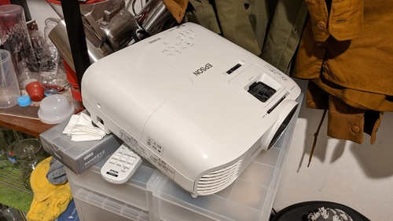
EPSON EH-TW5650. Fairly large, but relatively compact for its class.
Screen
You cannot project an image properly without a screen. Avoid using bare wallpaper walls; their textured surfaces ruin the clarity. Tripod screens consume as much floor space as a TV, so wall-mounted or ceiling-hung screens are recommended.
The “Good Screens Are Too Expensive” Problem
Proper projector screens can cost as much as the projector itself. We want to keep costs down.
Nitori Blackout Roller Blind Hack
A well-known hack in the Japanese home theater community is using Nitori’s Blackout Roller Screen/Blind. It produces a remarkably clear projection. Moreover, because it is a curtain/blind, it can be mounted directly onto existing curtain rails. Just make sure to measure the width accurately before purchasing.
Black Mask (Borders)
A black mask is essentially the dark frame around the projected image. Televisions have built-in bezels so we rarely think about it, but having a black border dramatically alters perceived contrast due to visual optical illusions. Advertisements showing projectors throwing directly onto plain white walls without borders are borderline unhinged.
Concept of black mask: Contrast looks sharper and cleaner with a dark frame.
Since the roller blind doesn’t come with a black border, you need to create one yourself.
Daiso Felt Fabric Hack
Daiso sells large sheets of black felt fabric very cheaply. Using black felt as a black mask is cost-effective. I fixed the felt onto the screen using strong neodymium magnets (also from Daiso).
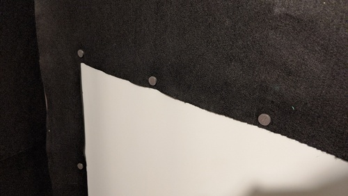
Black mask using Daiso felt fabric held by magnets.
Stray Light Countermeasures
Stray light refers to light bounced back from surrounding walls and floors. Even if you buy a high-contrast projector, reflections from white walls wash out the contrast. The solution: darken the walls and floors.
Darkening Walls with Felt
Replacing wallpaper in a rental apartment is difficult and expensive. Here again, Daiso felt comes to the rescue.
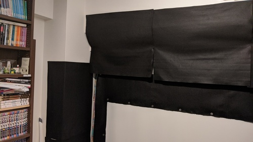
Stray light absorption with Daiso felt on the wall and ceiling near the screen.
To attach felt without damaging walls, adhesive putty (like Blu-Tack / Daiso Adhesive Tack) works wonders without leaving marks.
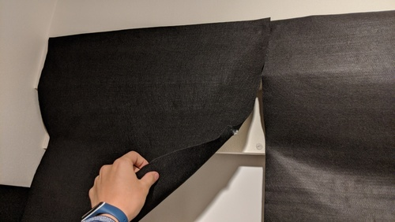
Felt attached using adhesive putty pins.
Darkening the Floor with Carpet Tiles
Hardwood floors reflect a lot of light. Laying down matte, dark carpet tiles helps absorb stray light.
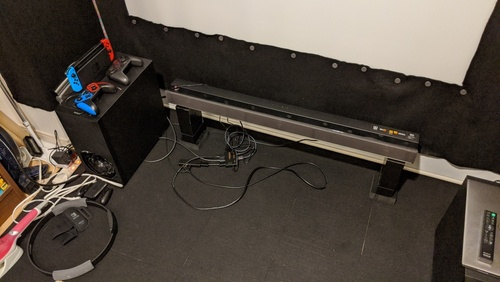
Black carpet tiles. Pick matte textures that minimize light reflection.
Speaker System
Most projectors have built-in speakers, but their acoustic quality is mediocre at best, and they are rarely positioned where you need them. A dedicated speaker system is crucial. While most people watch in 2-channel stereo, services like Netflix, Amazon Prime, and modern gaming consoles natively support 5.1ch surround sound. Building a 5.1ch setup lets you fully appreciate that rich audio design.
For small rooms, running long cables across the floor can be messy. Choosing a system with wireless rear speakers makes life significantly easier.
My Speaker System
I use Sony’s HT-Z9F (Soundbar) combined with SA-Z9R (Wireless Rear Speakers) to create a 5.1ch surround system.
Front Speaker Installation
If placed directly on the floor without a TV stand, low-frequency vibrations will shake the floor and cause noise complaints from neighbors. Using insulators and heavy speaker stands mitigates vibration propagation. I used common building bricks with rubber pads underneath.
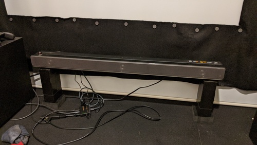
Soundbar setup: bricks, rubber sheets, and acoustic insulators isolating vibrations from the floor.
Wall-Mounting Rear Speakers
In a studio apartment, there is no floor space for rear speaker stands. Wall-mounting is ideal.
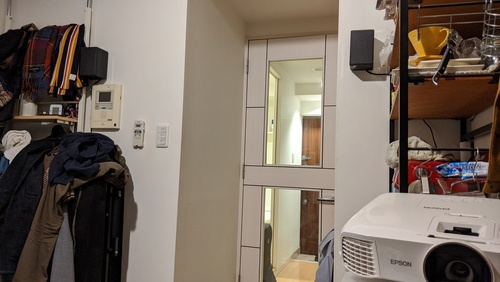
Wall-mounted rear speaker setup.
If you cannot drill holes into rental walls, use products like Kabe-Bijin (壁美人), which mount hooks using standard staple pins without leaving noticeable holes.
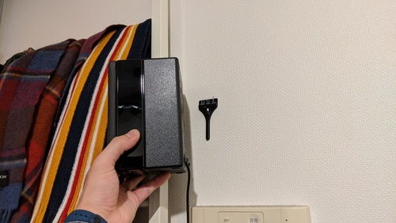
Speaker mounted using staple-fixed hooks.
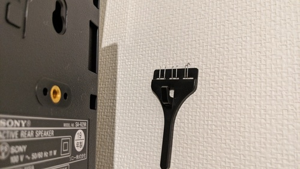
Fixed securely with staple pins; surprisingly sturdy.
Conclusion
This is one practical approach to building an immersive home theater in a compact room. Experimenting with DIY ideas to optimize your personal space is one of the greatest pleasures of home cinema. Enjoy your cozy home theater life!
====
This article is for Day 15 of the “Wall Advent Calendar 2019”.